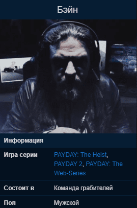

Бэйн
Загадочная фигура, стоящая за Crime.Net. Никто, включая участников команды, не видел Бэйна, а его контакты со связными и бандой осторожно спланированы, чтобы гарантировать минимальный риск для всех сторон.
В PAYDAY: The Heist

Анонимный координатор. Его лицо никогда не показывается. Во время ограбления он располагается где-то неподалеку. Во время миссии Panic Room, после взрыва он говорит: "That blew the dust off the shelves even where I'm sitting!", что переводится как "Это сдуло пыль с полок даже там, где я сижу!". В No Mercy он говорит, что скоро подберет команду, стало быть, он в вертолёте.
При провале миссии он корит себя за "просчёт в плане" или "недооценку полиции" и обещает использовать свои связи, чтобы быстро вытащить команду из тюрьмы.
В процессе игры он выполняет следующие задачи:
- Назначает цели миссии.
- Предупреждает команду о начале штурма, извещает о прибытии всех особых противников (кроме щитов).
- Предупреждает, когда кто-то из игроков упал или был арестован.
- Ведет переговоры с полицией по обмену заложников.
- Информирует о количестве оставшихся камер слежения.
- Предупреждает игроков, когда те застрелили гражданского.
- Если игрок арестован, он говорит, когда его можно обменять.
Также он является "мозгом" операции, и выполняет следующее:
- Планирует ограбление.
- Проводит для команды брифинг перед миссией.
- Ведёт переговоры с полицией об обмене захваченных грабителей на заложников.
- Координирует команду с другими участниками, такими как Алекс и Брюс.
- Вытаскивает команду из тюрьмы при неудаче.
- Занимается взломом в таких ограблениях как Diamond Heist и Undercover.
В Diamond Heist он лично допрашивает финансового директора и, если тот отказывается сотрудничать, сбрасывает в атриум. Потом Бейн ведет переговоры с Натаном Гарнетом об обмене его сына Ральфа на коды от хранилища.
Личное дело в файлах ФБР
Он лидер. Человек, который управляет Crime.Net. Паук в центре паутины. Мы почти ничего не знаем об этом человеке. Его имя упоминается здесь и там шестёрками, которых мы поймали - водители, отвечающие за побеги, курьеры и им подобные. В основном они упоминали его имя в надежде договориться, но никто не смог дать нам что-либо серьёзное. Нет веских доказательств. Несколько перехваченных радио фрагментов, но ни одного изображения.
Он работает через псевдонимы и посредников. Немногие имеют прямую связь с ним, и эти контакты тщательно проверяются. Мы уверены, что такой уровень безопасности, который окружает его, станет еще более серьёзным после инцидента с Моралесом.
Он, конечно, умный, и его способность взламывать компьютеры и сети поражает. Подключившись, он может вытаскивать такие данные, о которых мы и понятия не имели. Он способен убедить местных командиров освободить одного из членов банды PAYDAY, даже когда они были повязаны - что это за методы убеждения?
Трудно сказать, есть ли у него какие-то иные цели помимо желания разбогатеть. Характер его операций варьируется от ограблений мелких магазинов до хорошо спланированных грабежей на объектах высокой степени безопасности. Одно можно сказать наверняка: он никуда не уходит. Он расширяет свою команду и расширяет сферу своих операций за пределы Вашингтона.